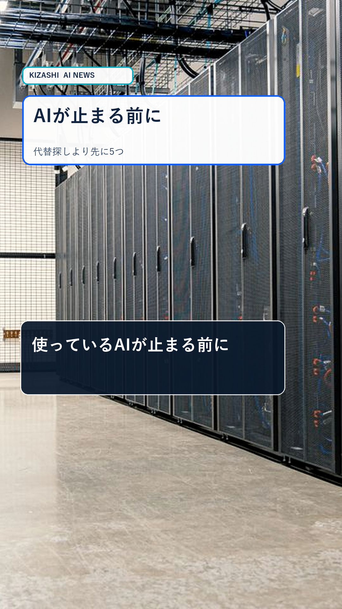
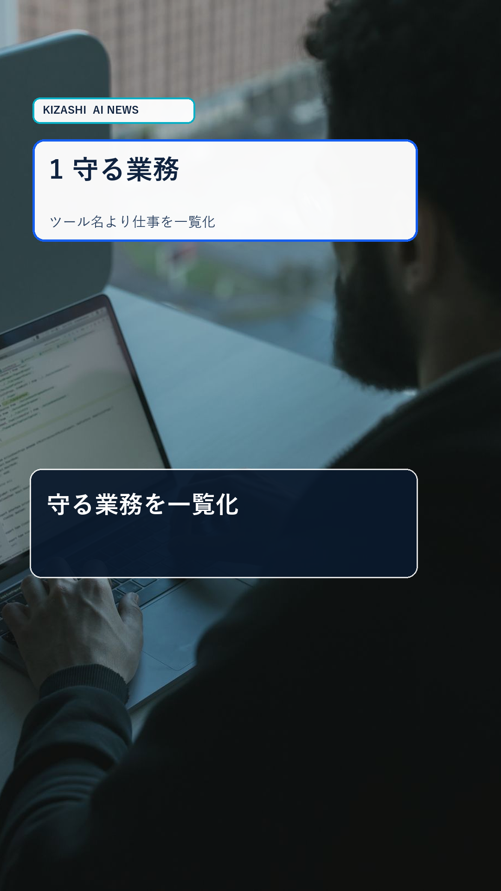
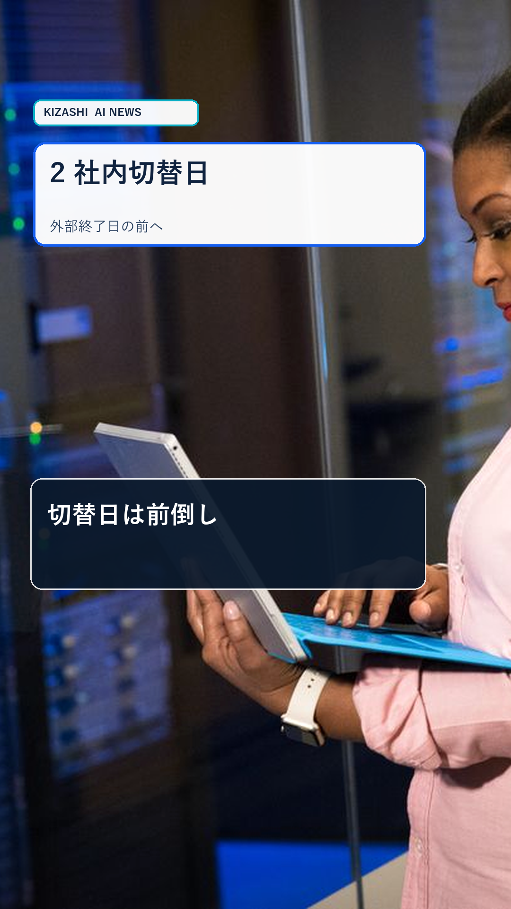
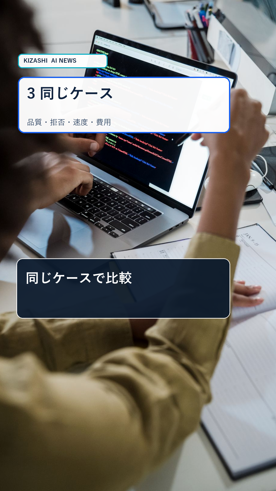
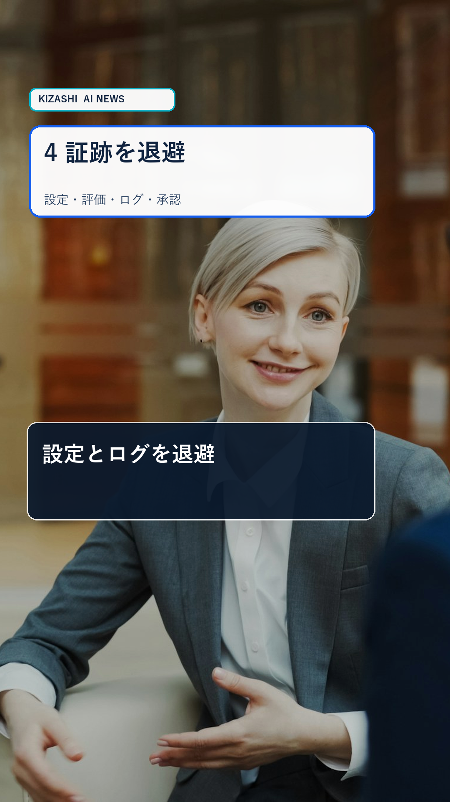
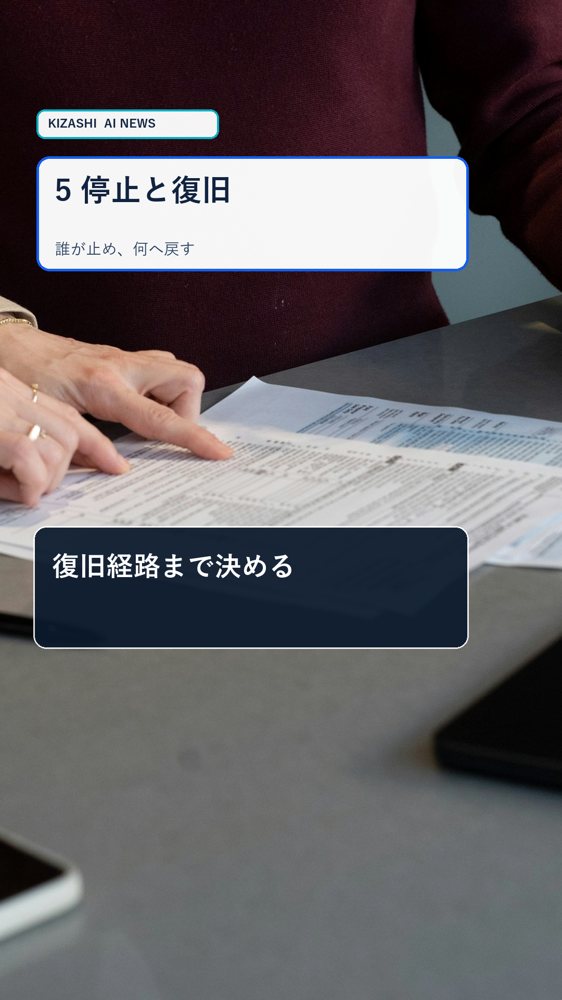
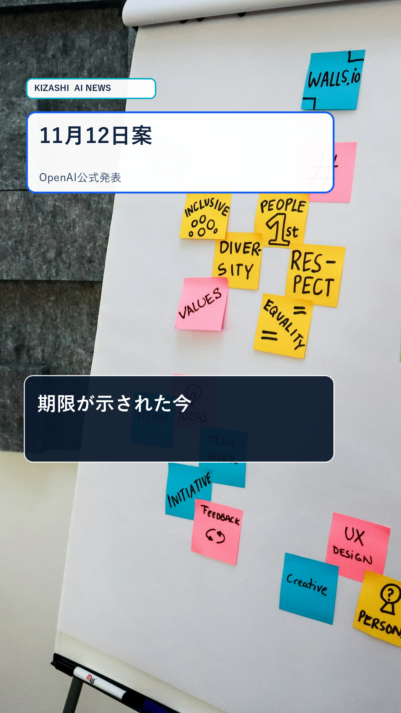
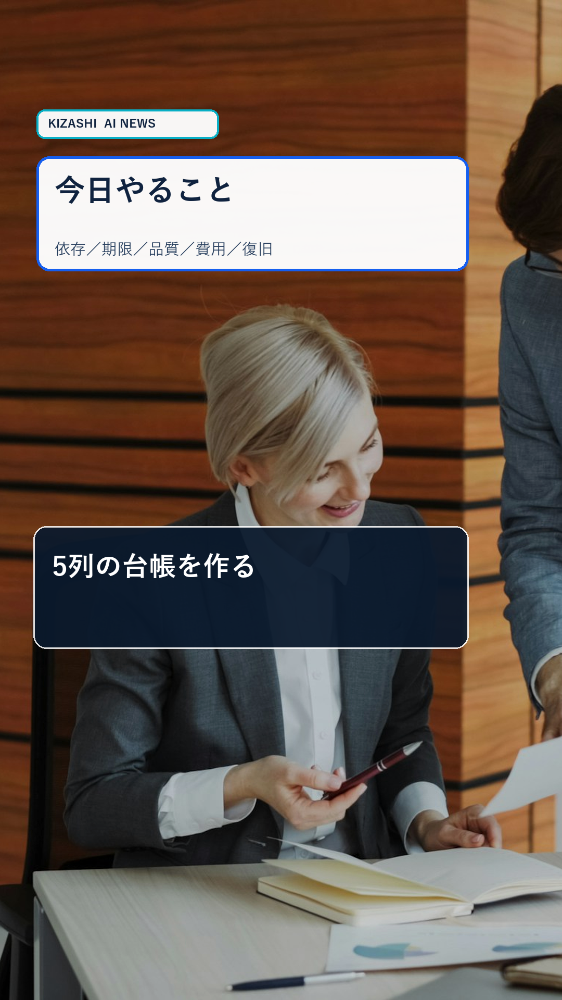

日曜Shorts Revision 1
実在写真＋要点スライド。字幕帯とスライド文字は490px分離。iPhone／Android相当UIの9フレームで重なり0px。
9フレーム








台本
使っているAIが止まる前に、代替ツール探しより先にやることは5つ。守る業務を一覧化。社内切替日は外部の終了日前に置く。同じ代表ケースで品質と費用を比較。設定・評価・ログを退避。失敗時に誰が止め、何へ戻すかを決める。OpenAIはCursorへのモデル提供終了の意向と11月12日の停止案を公表しました。期限は、次のAIを選ぶだけでなく、業務を止めない設計に使いましょう。